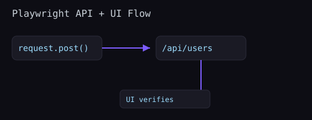

Playwright includes a lightweight API client so you can test REST endpoints alongside UI journeys. This tight loop simplifies seeding, verification, and cleanup.
import { test, expect, request as pwRequest } from '@playwright/test';
test('creates a user', async ({ request }) => {
const res = await request.post('/api/users', {
data: { name: 'Ava', email: 'ava@example.com' },
});
expect(res.ok()).toBeTruthy();
const body = await res.json();
expect(body).toMatchObject({ name: 'Ava' });
});
// Optionally build a custom context (e.g., with headers)
test('authenticated call', async () => {
const ctx = await pwRequest.newContext({
baseURL: process.env.BASE_URL,
extraHTTPHeaders: { Authorization: 'Bearer test-token' },
});
const res = await ctx.get('/api/me');
expect(res.status()).toBe(200);
await ctx.dispose();
});
import { test, expect } from '@playwright/test';
test('user appears in admin list', async ({ page, request }) => {
const created = await request.post('/api/users', { data: { name: 'Rui' } });
expect(created.ok()).toBeTruthy();
await page.goto('/admin/users');
await expect(page.getByRole('row', { name: /Rui/ })).toBeVisible();
});const res = await request.get('/api/products/1');
expect(res.headers()['content-type']).toMatch(/application\/json/);
const product = await res.json();
expect(product).toMatchObject({ id: 1, name: expect.any(String) });route.fulfill and assert a friendly error state in the UI.content-type).